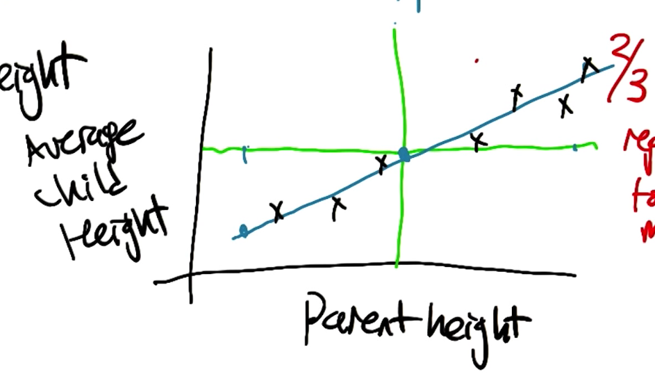
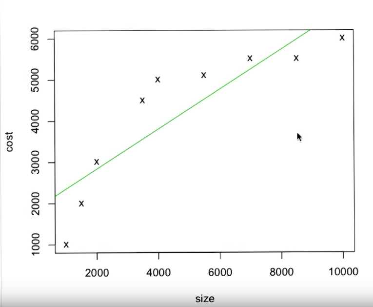
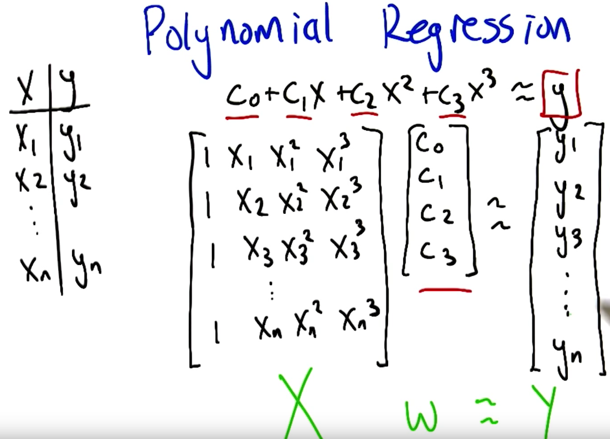
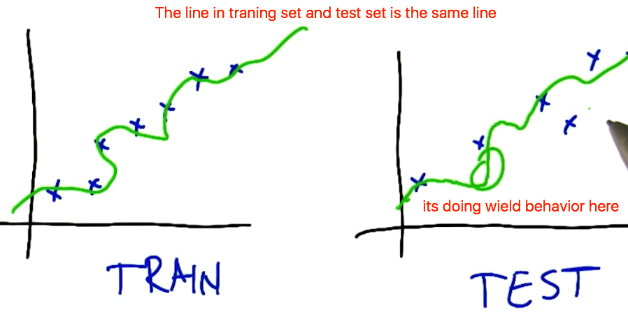
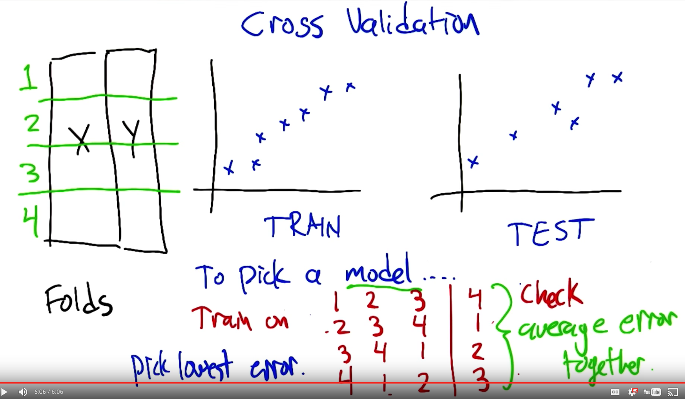
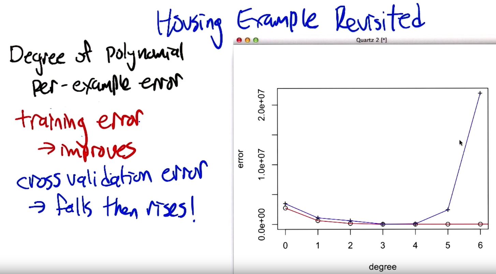
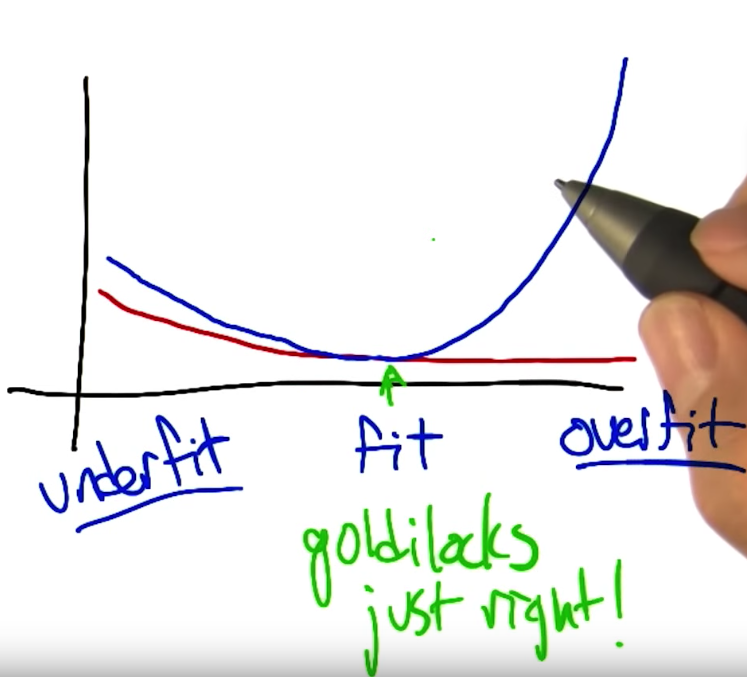
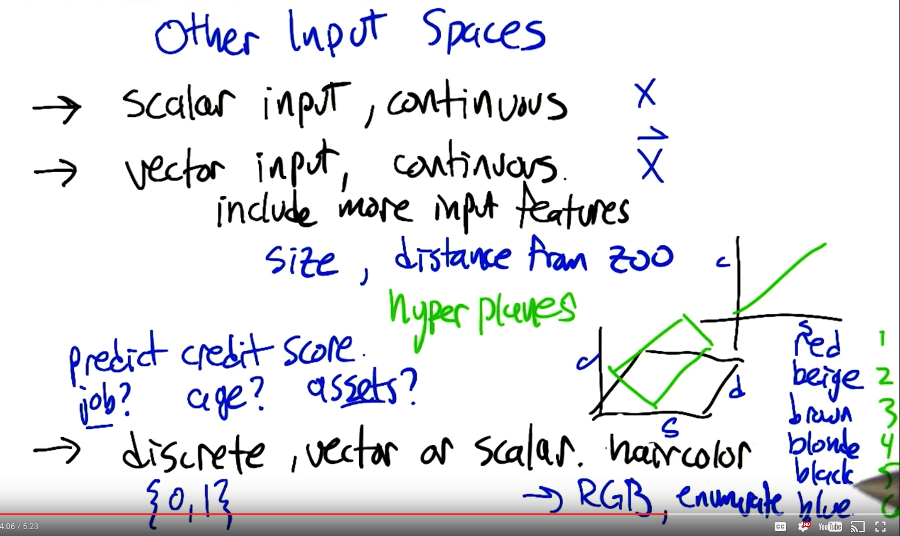

Regression and Classification
Machine learning. In this class we are talking about supervised learning. What is supervised learning? You have examples of inputs and outputs. Based on that, now we are given a new input and predict its output. There are two different type of Questions. Classification and Regression.
Difference Between Classification and Regression
Classification is taking some kind of input and mapping it to discrete label. Regression is more about continuous value function. For easier understanding, the difference is the output. Classification has finite output category but regression is continuous values, which usually being infinite.
More questions: Here
Quiz:
- input: credit history, output: lend money -> Classification
- input: photos, output: whether this person is high school age, college age, and grad age -> Classification
- input: photos, output: age of the person -> Regression
Classification Learning
Before going to the detail the first thing is to understand some definition.
Definition
Instances :
Another way to think is [input]{.underline}. They can be a set of pictures, or how much money I made. Its the set of inputs we are looking at.Concept :
It is functions that maps input to output. You have input like a set of picture the concept is idea describe set of things, it is what male is what female is and match input picture to is it male or not.Target Concept :
Target Concept is the thing we want to find. It is the actual answer. This is important. We have idea of this thing is male or female in our head, but unless we write it down somewhere we have no idea if it is right or wrong.Hypothesis Class :
All possible functions. Set of all concepts that willing to entertain. All functions I am willing to think about.Sample / Training Set :
A training set is a set of inputs paired with a label which is a correct output. If you get a bunch of input and output pairs, this is the training set. If you think in the real world, its I walk on the street and point out this is a car, this is not a car. Instead of giving you definition of the car.Candidate :
A candidate is just concept you think that might be target concept.Testing Set :
Now you have a bunch of candidate, but how do you know if they are right or wrong? That's where the testing set comes in. A testing set looks just like a training set. It will take candidate concept and determine whether it does a good job or not by looking at the testing set.
Regression
Mapping continuous inputs to outputs.
Meaning of The Word
Think about having parent height and their child height. The x-axis being parent height, the y-axis being child height. The green line their is average child height and average parent height. The taller parent has child taller than average and shorter parents having child shorter than average. Back in 1800s regression means collapsing backward towards the mean. But it is different nowadays.
The idea is to find the mathematical relationship based on a bunch of measurements of points. This is the term we are using for regression.

Linear Regression
Here I have a graph, with x-axis being size of the house, y-axis being the price of the house. Now we have a collection of data (points on graph) and we want to find a line (equation) where minimize the corresponding deviations (errors). Corresponding deviations means the data collection point to the point on the line (green line).

Order of Polynomial
The line doesn’t necessary to be linear. It should be corresponding to the following equation.
1 | f(x) = C_0 + C_1 * x + C_2 * x^2 + ... + C_k * x^k |
For k=0 is constant, k=1 is line, k=2 is parabola, k=3 is cubic etc. The question is which order of polynomial should we use to draw the line? It seems that the higher the k value, the better it fits the collection data (less error). It kinds good, but it doesn't feel correct.

1 | x_w = y \\ |
Why higher order of polynomial is not always better? It is because training data has errors. The function to draw the line is not exactly the modeling function, it is the function + error. Where do errors come from? For example: sensor error, data collected maliciously (being given bad data), transcription error(person make mistake when coping), unmodeled influences (for example for that housing problem, size is not the only thing that affect the price) etc.
Cross Validation
Usually we have a set of training set and a set of test set. First we want to draw the line in the training set, and we draw the line (linear k=1) and the line doesn’t fit properly so we might want to try a higher order of polynomial. Now if we try a higher order of polynomial it definitely hit the point much better, but when we try that line on test set, it is possible that it is doing wield behavior like below.

If we train on the test set, then we must get the best behavior on the test set, but the goal is to generalize the real world so that is definitely cheating. We really count the data is IID, meaning all the data are drawing from the same assumption.
So we need to use a model that is complex enough to fit the data without causing problems on the test set.
Is there something we can use on the training set and pretend it is the test set? We can use a part of the training set and act as the test set and this is not cheating because it is not the real test set. Here is how we do the cross validation
We are going to divide the training data into Folds. We will pick a model first. What we can do is to train on 1, 2, 3 and try on 4, then train on 2, 3, 4 try on 1, then train on 3, 4, 1 and train on 2, etc. Then average all the error together and see how we done. The model that with the lowest average error is the one we are going to use.

Cross Validation Example: Housing Revisited
Again, in the housing example, if we look at the degree of polynomial that fits the data, here is a training error graph. Look at the normal training error, (red plot) you can see it is always falling and it becomes smaller and smaller when having more degrees.

Now lets look at the cross validation error. (green line). At first, you are underfit the data, and as the line goes close and close to polynomial 4, it fits better. After polynomial order 4, you can see the line is overfit the data. The error starts increasing. And the point that it just fit is called the Goldilocks zone. That's the point you really want to find.

Other Input Spaces
For input, what we talked before are scalar input, continuous. That is exactly the x. What about the vector input? We can include more input features, but how do we do that?
For example, for that housing problem, we have two input variables, one is the size, the second is the distance from the zoo. Imagine that the further away from the zoo the better is just like the bigger the size the better it is.
Now how do we combine them? Hyper Planes?
Now if we want to predict credit score what will affect? For example, do you have a job or not, you can think like numbers {0, 1}. Vector and Scalar mentioned before. What about the hair color? We can do enum or just using RGB value which becomes scalar property.
